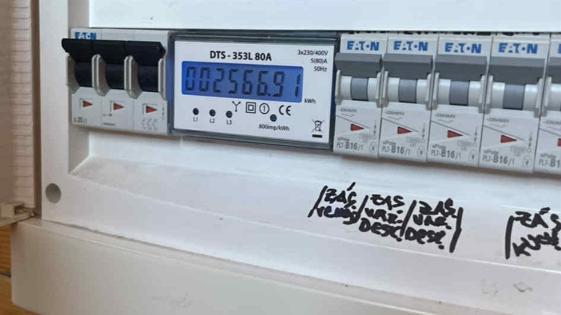
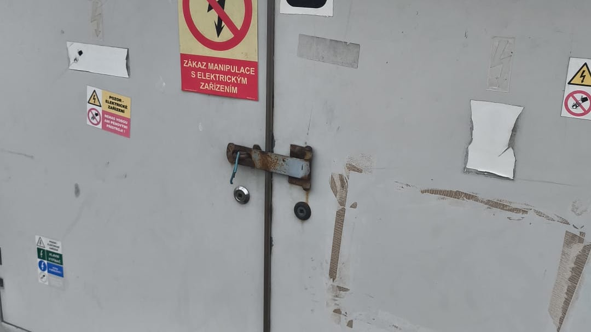

Strømbrudd – førstehjelp
Blackouts i husbåter er mer vanlig enn i en leilighet på grunn av kapasitetsgrunner og flere krav på grunn av været, spesielt på veldig varme eller svært kalde dager.
Hvis du er i stand til å handle på et elektrisk brett, sjekk panelene som på dette bildet. VELDIGT: Bruk ALLE TIDER GUMMISOLSHOE når du berører elektrisk panel eller et apparat!
Se nedenfor og kontakt oss i tilfelle behov!

Alle brytere bør være på (med mindre det er et skilt, bånd eller noe uvanlig).

Elektriske paneler er på dokken, lik denne. Noen er bak til bak.

Sjekk disse for opp posisjon, nær den blå porten.

Disse kan også snuble ned.

Ved begynnelsen av parkeringsplassen, sjekk om nummer 9 har alle brytere opp (


Nr. 9 inne (du trenger en nøkkel eller noe som roterer den firkantede pinnen)

Mer unna, nummer 8 har et par brytere som også må være oppe.

Sjekk disse inne. Alltid sjekk at ingen jobber nedstrøms!
VIKTIG: VENNLIGST MELD HVILKEN BRYTER SOM VAR NED. TA ET BILDE FØR OG ETTER.
Denne siden er automatisk oversatt fra den engelske guiden. Ved tvil gjelder den engelske versjonen. Engelsk original